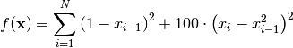

RosenbrockCalculator¶
The RosenbrockCalculator evaluates the Rosenbrock function

for an arbitrary number of arguments  . The Rosenbrock function is a simple but not trivial
optimization problem which can be used as a test model for the validation of Fittino’s
functionality, especially for the optimization and sampling algorithms. For low dimensionality, the
Rosenbrock function can also be computed by the
. The Rosenbrock function is a simple but not trivial
optimization problem which can be used as a test model for the validation of Fittino’s
functionality, especially for the optimization and sampling algorithms. For low dimensionality, the
Rosenbrock function can also be computed by the FormulaCalculator but at some point the explicit
notation becomes tedious. In addition, the RosenbrockCalculator might be a helpful simplistic
example for developers who want to implement their own custom Calculator class.